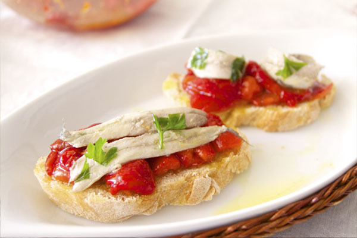

Enlace
a la receta de canapés de boquerones en vinagre con tiras de
pimiento asado
Enlace a la receta de canapés de salmón y aguacate
Enlace a la receta de canapés de salmón y huevas de caviar
Enlace a la receta de canapés de sardinas 1
Enlace a la receta de canapés de sardinas 2
Enlace a la receta de canapés de paté con frambuesa y nueces
INGREDIENTES
Glaseado brillo:
- 5 láminas gelatina (Hacendado)
- 120 gr nata montar
- 170 gr agua
- 130 gr azúcar
- 75 gr cacao en polvo (Hacendado, pero podéis ponerle puro)
ELABORACIÓN
Plato de sal sulfurosa negra Himalaya Kala Namak con aceite de oliva virgen extra
Canapés de boquerones en vinagre con tiras de pimiento asado
En la receta del bizcocho yo cambié el yogur por nata 125 gramos, tamicé la harina y levadura, batí todo el tiempo con la mariposa y cuando terminó el paso 1, lo volví a poner otra vez el mismo tiempo SIN TEMPERATURA.